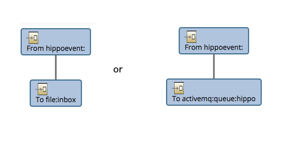

Apache Camel - Hippo Event Bus Support component provides proper solutions for the architectural needs where you should update data in the external system on document events (such as publication/depublication) in Hippo CMS system.
The external systems may include the following in practice:
The most popular scenario is integrating with the existing Enterprise Search Engine. Hippo CMS is required to update search index data based on document publication/depublication events mostly, as shown in the diagram below.
If you implement an event listener registered to Hippo Event Bus, then it should look like almost the same as the diagram shown above. The event listener can probably invoke the external search engine (e.g, through either REST service or direct API call) directly in this approach.
However, this approach could bring the following architectural questions:
Apache Camel - Hippo Event Bus Support component is now provided to answer all those questions properly.
This demo project shows real solutions for the following scenarios:
The first demo shows integration with an Apache Solr search engine (as embedded as war). It is recommended to see this example first because it doesn't require any other software installation and configuration.
The second demo shows the same integration approach as the first scenario, but with ElasticSearch engine instead of Apache Solr search engine.
The third demo shows integration with either Apache Solr or ElasticSearch engine with using ActiveMQ as message queueing solution instead of file-based inbox folder polling.
Basically solutions are really simple thanks to Apache Camel and hippoevent: Apache Camel component.
The idea in this demo project is to configure two Camel routes:
Depending on the real use cases, you can configure more advanced complex routes (such as parallel, translation, etc), but the fundamental idea here is 'store first and forward later'.
An activity flow diagram in swimlanes would help understand this point:
In the first route (either 'Route-HippoEventBus-to-File' or 'Route-HippoEventBus-to-Queue' in this demo project), hippoevent: component receives HippoEventBus event and converts it into a JSONObject. And, the next component (either 'file:' or 'activemq:' component in this demo project) in the route stores the JSON message into either file inbox folder or designated message queue.

Note: With the default running mode, the first component simply stores a Hippo Event into a JSON file in 'inbox' file folder. With ActiveMQ running mode, the first stores a Hippo Event into a JSON message in 'hippo' message queue instead.
In the second route (either 'Route-File-to-REST' or 'REST-Queue-to-REST' in this demo project), a Camel component either polls a file from the inbox folder or receives a message from the designated message queue. And, the next component ('http4:' in this demo project) makes an HTTP request to the designated REST service URL in order to either index a document or delete a document in the external search engine.
Note: With ActiveMQ running mode, the first component is replaced by 'from:activemq:hippo' in order to receive event messages from a message queue named 'hippo' in this demo project.
With this approach, you can fulfill the following quality attributes:
You can build and install the module first with Maven.
$ mvn clean install
Now you can build and run the demo project from the submodule 'demo' with Maven and run the demo applications locally with Maven Cargo Plugin (Apache Tomcat embedded).
$ cd demo
$ mvn clean package
$ mvn -P cargo.run
If you run the Demo project, then you will see the following web applications by default: